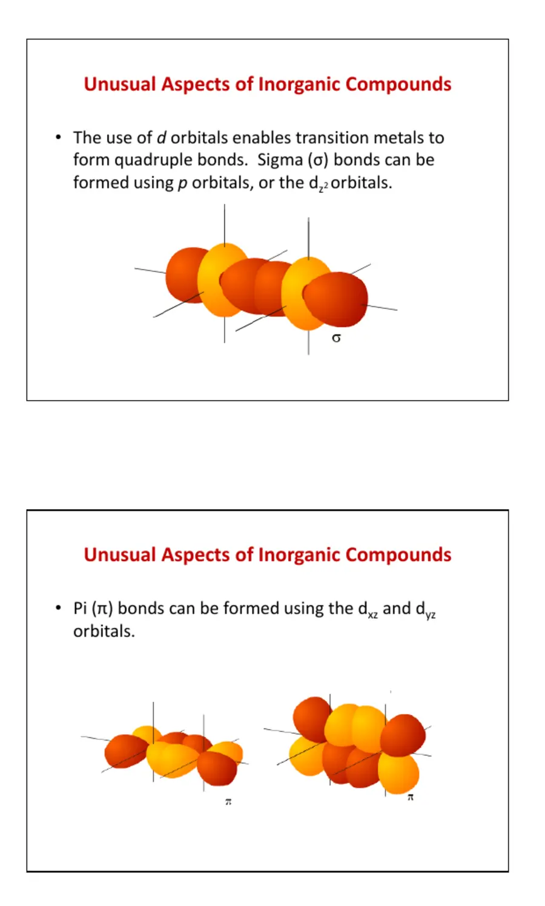

LESSON 01 · INTRODUCTION
课程导论与无机化学的边界
第一讲不只是课程说明：它回答“无机化学为何需要一套不同于有机化学的结构语言”，并建立今后阅读合成论文的证据链。
1. 课程地图与评价方式
无机化学 I 从原子尺度逐级向上组织：先用量子力学解释原子轨道和周期性，再讨论局域成键、对称性与分子轨道；随后把这些工具用于酸碱、晶态固体、主族和配位化学。这个顺序意味着后面的知识并不是彼此独立的“元素事实”。例如某配合物的颜色要回到轨道分裂和选择定则，某卤化物是否水解要同时考虑中心原子的电荷密度、键极性、配位数变化和热力学驱动力。
3 次随堂测验，每次 4%；9 次作业，每次 3%；无机化学论文精读 11%。过程性任务合计与期末同权，意味着每次作业都应当作为章节复习而非一次性提交。
既要会从轨道、对称性和热力学解释，也要掌握代表性物质、反应和实验事实。只记“趋势箭头”而不能解释例外，通常不足以完成综合题。
最稳妥的学习单位不是一张幻灯片，而是一个完整问题：现象是什么，结构或反应如何表示，决定因素有哪些，证据是什么，有何例外。网站后续每个章节都按这一顺序整理，并把第一次出现的物理量、符号和英文术语立即说明。
2. 无机化学到底研究什么？
把无机化学说成“研究除有机物之外的物质”很方便，但并不严谨，因为碳酸盐、氰化物、金属羰基、碳化物、石墨和富勒烯都含碳，却通常属于无机或有机金属化学。更有解释力的定义是：无机化学研究整个周期表中元素及其化合物的组成、结构、成键、反应性和功能，并特别关注周期性、氧化态、配位环境、固态结构以及金属中心参与的反应。
无机化学、有机化学与生物化学之间没有不可跨越的墙。有机金属化学以直接金属—碳键为核心，将金属轨道与有机配体的 σ 或 π 体系连接起来；生物无机化学研究金属离子在蛋白质、酶、电子传递和医学中的作用；材料化学则把局部配位与晶体长程有序联系到电、磁、光和催化性质。因此“属于哪一科”通常取决于问题与方法，而不是简单查看化学式中有没有碳。
碳常为四配位，稳定骨架主要由定向的两中心两电子共价键组成；官能团与电子效应是组织反应的主线。
配位数、氧化态、离子性和聚集方式变化更广，可出现桥联、多中心键、金属簇及延展固体。
直接金属—碳键使金属中心能够活化 CO、烯烃、氢气和 C—H 键，是均相催化的重要基础。
3. 元素多样性如何转化为化学多样性
碳的价层只有 2s 和 2p 轨道，常见价态与配位数相对集中；周期表其余元素则跨越 s、p、d、f 四个区块。原子半径、电负性、可用轨道、相对论效应和氧化态稳定性都随位置而变，因此相同计量式未必对应相同结构。例如四配位碳几乎总是四面体，而四配位 d8 金属既可能是四面体，也可能是平面正方形；前者与后者的磁性、颜色和取代反应性往往完全不同。
无机中心原子还可达到 5、6、7、8 甚至更高配位数。配位数是与中心原子直接相连的供体原子数，不能与氧化态或“形成了几根普通共价键”混为一谈。五配位结构常在三角双锥与四方锥之间变化；六配位最常见八面体，但也存在三棱柱；高配位结构在较大的金属离子、镧系离子及空间位阻较小的配体中更常见。几何构型不仅是画图问题，它控制轨道重叠、能级分裂、立体异构和反应进入路径。
判断顺序
先确定中心原子、直接相连的供体原子与配位数，再判断电子计数、氧化态和可能几何；最后才讨论磁性、光谱和反应性。不要看到四个配体就自动画四面体。
4. 金属—金属多重键：σ、π 之外的 δ
两个原子沿核间轴正面重叠形成 σ 键；两组轨道在核间轴两侧侧向重叠形成 π 键。过渡金属还拥有适当取向的 d 轨道：两只 dxy 或 dx²−y² 轨道可在四个瓣上面对面重叠，形成绕核间轴有两个节面的 δ 键。经典金属—金属四重键通常可描述为一个 σ、两个 π 和一个 δ 成键分量。由于 δ 重叠不如 σ 和 π 有效，它往往是最弱的组成部分，却能锁定两端配体的相对取向。
“键级为四”不是说四根完全等价的线叠在一起，而是对占据成键与反键轨道后净成键贡献的概括。金属—金属距离、振动频率、电子结构计算和反应性应共同用于检验这种描述。在真实体系中，配体会改变金属轨道能量和对称性，形式氧化态与实际电荷分布也不相同，因此结构式中的多重线只是电子结构模型的压缩表达。

关于 C₂“四重键”的争议
课件引用 C₂ 的讨论，是为了说明键级依赖所采用的理论分解。传统分子轨道模型与某些价键分析对弱成键分量的命名并不一致。考试若未指定模型，应给出所用电子排布与键级定义，而不是只写“C₂ 是/不是四重键”。
5. 桥联、多中心键与缺电子成键
有机化学入门常把一根线理解为一对电子局限在两个原子之间，但许多无机化合物无法用这种局域模型完整描述。桥联氢、桥联卤素或桥联烷基可以同时与两个或多个中心相互作用。乙硼烷 B₂H₆ 中的两个桥氢通常用三中心两电子键描述：一对电子离域在 B—H—B 三个原子上，既满足结构稳定性，又解释了电子数不足以形成四根普通 B—H 两中心键的问题。
“缺电子”并不等于没有稳定成键，而是指可用于建立经典两中心两电子键的电子数不足。体系可以通过多中心离域降低能量。相反，某些主族超价分子也不应简单描述为中心原子调用高能 d 轨道“扩展八隅体”；现代解释更强调分子轨道离域、离子性贡献和配体电负性。网站后续遇到这些结构时，会把 Lewis 形式电荷、电子计数与真实离域模型分开呈现。
桥联符号 μ 用来说明一个配体跨越多少个金属中心，例如 μ₂-H 表示氢桥联两个中心。桥联会改变每个中心的电子计数和配位数；读结构图时必须先识别桥联关系，否则很容易算错金属价电子数。
6. 金属簇与有机金属 π 配合物
金属簇是含有多个相互成键金属原子的有限聚集体。金属原子可以构成三角形、四面体、八面体或更复杂的多面体骨架，配体则可能端基配位、桥联一条边或覆盖一个面。簇化合物把单核配位化学与金属固体之间连接起来：多个金属中心可以合作吸附底物、储存电子或完成单个中心难以实现的多电子过程。
有机分子与金属的结合也不限于一个原子提供孤对电子。烯烃的 π 键、烯丙基、环戊二烯基和芳环可作为整体配体。以烯烃配合为例，常同时存在配体 π 轨道向金属的 σ 给电子，以及金属占据 d 轨道向配体 π* 反键轨道的反馈给电子。两种作用协同增强金属—烯烃结合，并削弱原有 C=C 键。这套“给电子—反馈给电子”图景以后会用于解释金属羰基、18 电子规则和催化循环。
夹心化合物中，金属位于两个平行 π 配体之间；半夹心结构则只保留一个面配位配体，并由其他配体占据剩余配位位置。结构式中用 ηn 表示连续 n 个原子共同参与配位的齿合度，例如 η5-C₅H₅。η 与桥联符号 μ 描述的是不同维度，不能混用。
7. 无机反应的十类基本语言
无机反应可以按总体结果分为酸碱、加成、消除、氧化还原、插入、取代、重排、复分解、溶剂解、螯合与缩合等类型。分类不是互斥的：一个配体取代反应可能同时伴随溶剂解，一个氧化加成既使金属氧化态升高，也使配位数与电子数改变。真正重要的是逐项记录发生了哪些变化。
酸碱质子或电子对的转移
加成 / 消除原子或配体数目增加 / 减少
氧化还原电子转移与形式氧化态改变
取代进入基团替换离去基团
插入 / 脱出配体进入 / 离开金属—配体键
重排组成不变而连接或构型改变
复分解两组离子或配体交换
溶剂解溶剂参与断键并成为新配体
螯合多齿配体形成多个配位键
缩合常伴随失水等小分子脱除
分析反应时可以使用“四本账”：中心原子的氧化态是否变化；总价电子数是否变化；配位数是否变化；关键键的连接方式是否变化。这比只凭反应物外观猜名称可靠得多。机理未知时也应诚实地只写总反应分类，不把可能路径当成已经证明的事实。
8. 描述性无机化学与原理之间的关系
Cotton 等人的补充教材强调先掌握真实物质、制备和反应，再用周期性组织事实。这是对“只会讲趋势、却写不出具体反应”的纠正。无机化学中的键常较活泼，反应又可能在高温、高压或非均相条件下进行；产物受晶格能、溶剂、气体逸出、动力学惰性和实验操作共同影响，未必都能还原为一条简洁的有机式箭推机理。
但描述性并不等于死记。以同族卤化物水解为例，应同时问：中心原子是否有可接受电子对的低能轨道，M—X 键极性如何，中心是否能提高配位数，生成的 M—O 键是否更强，水解产物是否进一步缩合或沉淀。事实是检验模型的材料，模型则帮助压缩和迁移事实。有效笔记必须保留二者之间的双向联系。
网站记录规范
每个代表性反应同时记录条件、溶剂、现象、产物结构、净反应式和驱动力；机理只有在存在证据或教材明确讨论时才单列。这样以后做实验或读论文时，笔记不只是“结论表”。
9. 如何精读一篇无机合成论文
论文精读作业要求选择近期发表、涉及配位或有机金属配合物制备的研究论文。第一步不是逐句翻译，而是建立问题链：作者为什么需要这些化合物；此前方法缺少什么；新化合物解决了结构、反应性、催化或功能上的哪个问题。研究动机应由引言和结果共同验证，不能只改写摘要第一句。
- 确认论文身份
记录题目、作者、期刊、年份、卷页或文章号及 DOI。DOI 是持久标识，不应把临时下载链接当作正式引用。
- 重建合成路线
选一条具体制备，列出计量关系、试剂、溶剂、温度、时间、气氛、后处理与产率。结构式应显示原子连接，箭头上方写关键条件。
- 核对试剂来源
区分商业可得、按照文献制备和本工作首次合成的物质。若前体来自另一篇文献，应沿引用追溯。
- 建立表征证据链
每一种表征都回答不同问题：元素分析或高分辨质谱支持组成，NMR 支持溶液结构和对称性，IR 可识别特征配体，磁性和 EPR 反映未成对电子，单晶衍射给出固态连接与几何。
- 区分“证明”强度
单一峰或计算结果通常不足以独立证明完整结构。还要检查是否存在异构体、溶剂化物、动态交换或固态与溶液结构差异。
10. 表征方法分别告诉我们什么
最可信的结构结论往往来自互相独立的多种证据。如果晶体结构显示一种几何，而溶液 NMR 表明对称性不同，就应讨论溶剂中重排、快速交换或晶体堆积，而不是选择性忽略其中一项。
11. 文献、结构与数据工具
Web of Science 适合追踪主题、作者、被引与引用网络；SciFinder 以物质、结构和反应检索见长；期刊官网用于确认正式版本、Supporting Information 和更正。CSD/ConQuest 主要收录有机及金属有机小分子晶体结构，ICSD 面向无机化合物与材料。Mercury 可读取 CIF，查看晶胞、配位环境、分子间接触与粉末衍射模拟。
ChemDraw 或 KingDraw 用于二维结构与反应式，Mercury、Diamond 等用于晶体结构可视化，Origin 用于数据分析与作图，Mnova 用于 NMR、MS 等谱图处理。工具不能替代化学判断：自动生成的键、氧化态、峰归属或拟合结果都应人工核对。尤其是从 CIF 打开的结构，软件可能按距离自动连键；那是显示规则，不必等同于作者所主张的化学键。
关于课件里的旧版本
课件保留了 ChemBioDraw 12、Origin 8.5、Mnova 7 等历史界面。笔记保留软件“负责什么”，但不把旧版本号和失效下载地址当成当前教程。学校订阅入口也可能改变，应从图书馆数据库页面进入。
12. 化学论文的结构与引用
研究论文通常由摘要、引言、结果与讨论、结论、实验部分、参考文献和 Supporting Information 构成。摘要便于筛选，不能替代正文；引言说明知识缺口；结果与讨论把实验观察转化为论证；实验部分提供可重复的操作；补充信息常包含完整谱图、晶体学数据和更多对照。阅读合成论文时，实验部分与补充信息的重要性不低于正文。
规范引用应使读者能够唯一定位来源。典型期刊格式包含作者、期刊缩写、年份、卷和页码或文章号；DOI 可作为稳定补充。引用论文并不意味着其中每句话都自动正确，还要确认被引用内容究竟来自原始研究、综述还是二手转述。对结构和反应机理的强结论，尽量追到提供直接数据的原始论文。
论文中的图表也是论证而非装饰。读图时先看坐标、单位、误差和对照，再看作者文字；晶体结构图应注意热椭球概率、无序处理、氢原子是否省略以及键长误差。今后网站引用课件或教材图片时会保留来源与图意说明，并避免截取后失去坐标、图例或关键注释。
本课速记与常见误区
- 无机化学的核心不是“没有碳”，而是覆盖整个周期表的结构、周期性和反应性。
- 配位数、氧化态、价电子数和形式键数是四个不同概念，必须分别计算。
- 过渡金属可形成金属—金属多重键、桥联结构、簇合物和 π 配合物。
- δ 键是特定 d 轨道面对面重叠形成的成键分量，不应把所有金属多重键都机械写成四重键。
- 四配位不必然是四面体；电子构型、配体场与空间位阻共同决定几何。
- 描述性化学不是无解释的背诵；理论也必须接受真实化合物和反应事实的检验。
- 论文中的“合成成功”要由组成、连接、几何、电子结构及体相纯度等多条证据共同支持。
- 数据库、绘图和结构软件提供检索与显示能力，不能代替对化学合理性的判断。
14. 从第一讲开始建立自己的知识网络
第一讲的内容看似分散，实际上给出了整门课的工作方法。面对一个陌生无机化合物，可以固定追问：中心原子是谁；价电子数与常见氧化态是什么；配体通过哪些原子配位；配位数和几何构型如何；是否存在金属—金属键、桥联或多中心键；样品处于溶液还是固态；作者用什么证据支持结构；形成该产物的热力学和动力学因素分别是什么。以后每学到一种新理论，都应返回这些问题，看看它能解释哪一层。
复习时可以把知识分成“事实—表示—解释—证据”四栏。事实包括颜色、磁性、溶解性、稳定性和反应结果；表示包括结构式、电子构型、轨道图和化学方程式；解释包括周期趋势、轨道相互作用、晶格能与反应机理；证据包括光谱、衍射、磁性和计算。若某条笔记只有结论而没有表示与解释，它很难迁移到新题；若只有漂亮理论而没有代表性物质和实验事实，也不构成完整的无机化学知识。
文献阅读还要增加一栏“可信度”。必须分清作者直接测得的结果、根据数据作出的推断、引用前人工作的背景，以及尚未验证的可能解释。图中画出的键不必然等于被实验独立证明的键；一个漂亮的晶体结构也不保证体相样品纯净；溶液中的活性物种可能与晶态结构不同。保持这种证据意识，正是从课程学习走向真实化学研究的第一步。